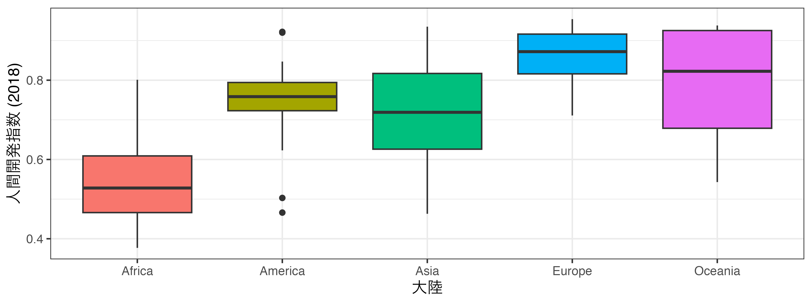

ミクロ政治データ分析実習
14/ 可視化（3）
散布図の必須要素
散布図を作成する際に必要な最低限の情報
データにフリーダムハウス・スコアと人間開発指数の列が必要
x: 点の横軸上の位置- フリーダムハウス・スコア
y: 点の縦軸上の位置- 人間開発指数
- 原因と結果の関係（因果関係）が考えられる2変数の場合、原因を横軸、結果を縦軸にする。

linetypeの見本
種類が多くなると区別しにくいため、最大3つ程度
- 実線（1）、破線（2）、点線（3）
- 一つ面に登場する線は3〜4本程度まで（色分けも同様）

折れ線グラフ + 散布図（図）

箱ひげ図の作成
人間開発指数 (HDI_2018) の箱ひげ図
x、またはyに分布を確認した変数をマッピングするxにマッピングするか、yにするかによって箱の向きが変わる

カスタマイズ（色）
箱の色を変える
- すべての色を変える場合、
aes()の外側にfill - 箱ごとにの色を変える場合、
aes()の内側にfill


カスタマイズ（箱の幅）
aes()の外側にwidthを指定

横軸と縦軸の交換
箱が多すぎて読みにくい場合、xとyを交換も良い